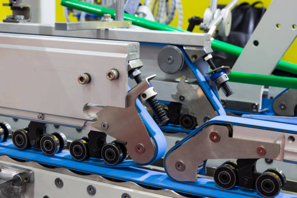

Textile World Knitting Machinery Corporation
<Textile World Knitting Machinery
 | M-9MEQGDouble Knit SeriesDouble knit quarter gauge technology.Technical DetailsDiameters 30, 34 Gauges 6/24, 7/28, 8/32 Frame M Feeds 72, 78End UsesSports & Leisure, Apparel, Home Textiles, Technical Textiles, AutomotiveFabric PotentialsCoarse/Fine gauge, Reversible, Pique, 2 Colour Constructions |
|  | M-9MEQGDouble Knit SeriesDouble knit quarter gauge technology.Technical DetailsDiameters 30, 34 Gauges 6/24, 7/28, 8/32 Frame M Feeds 72, 78End UsesSports & Leisure, Apparel, Home Textiles, Technical Textiles, AutomotiveFabric PotentialsCoarse/Fine gauge, Reversible, Pique, 2 Colour Constructions |
 | M-9MEQGDouble Knit SeriesDouble knit quarter gauge technology.Technical DetailsDiameters 30, 34 Gauges 6/24, 7/28, 8/32 Frame M Feeds 72, 78End UsesSports & Leisure, Apparel, Home Textiles, Technical Textiles, AutomotiveFabric PotentialsCoarse/Fine gauge, Reversible, Pique, 2 Colour Constructions |